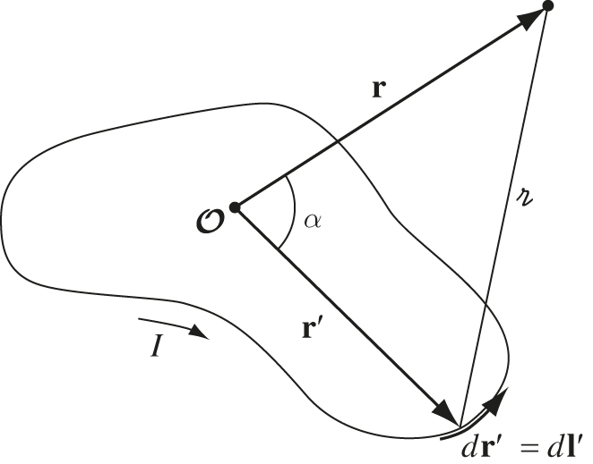

6 Magnetic Vector Potential
Recommended reading: Griffiths Section 5.4
##Pre-lecture problem Griffiths Problem 1.18
6.1 The vector potential
In electrostatics, we introduced the concept of electric potential, a scalar associated with the electric field, given by its gradient: \[ \mathrm{\mathbf{E}}= \mabla V\]. So you may wonder if there is an equivalent potential for the magnetic field. There is indeed such a potential, but to explore what this is we must first think more deeply about magnetic fields themselves. We know that there are no magnetic monopoles and therefore magnetic fields always form closed loops. Mathematically, this means that \(\nabla \cdot \mathrm{\mathbf{B}}= 0\) - the divergence is a measure of the degree to which vectors in a field diverge - the magnetic field cannot diverge, hence \(\nabla \cdot \mathrm{\mathbf{B}}= 0\). We need the magnetic field to be a derivative of the magnetic potential, but we cannot use the gradient function and have a scalar potential as we did with electric potential, as then \(\mathrm{\mathbf{B}}\) might not satisfy \(\nabla \cdot \mathrm{\mathbf{B}}= 0\). The divergence of a curl is always zero, therefore we can define some vector potential \(\mathrm{\mathbf{A}}\) such that
\[ \mathrm{\mathbf{B}}= \nabla \times \mathrm{\mathbf{A}}\]
\(\mathrm{\mathbf{A}}\) is the magnetic vector potential. We will not see the derivation for this now, at it requires material from Lecture 8 - we will derive it then. For now, you will have to take my word for it that \(\mathrm{\mathbf{A}}\) is given by
\[ \mathrm{\mathbf{A}}(\mathrm{\mathbf{r}}) = \frac{\mu_0}{4 \pi} \int \frac{\mathrm{\mathbf{J}}(\mathrm{\mathbf{r}}')}{r_s} \mathrm{d}\tau'\]
You may be wondering - but what is this physical significance of the magnetic vector potential? What does it represent? If you recall, the electric potential was the potential energy per unit charge at a given point in space, or alternatively the work done per unit charge to bring a test charge from inifinity to a given point in space. Similarly, the magnetic vector potential is the potential energy per unit element of current
We can see that the magnetic vector potential is related to the volume current density \(\mathrm{\mathbf{J}}\) here. However we can also define a magnetic vector potential for line…
\[ \mathrm{\mathbf{A}}= \frac{\mu_0}{4 \pi} \int \frac{\mathrm{\mathbf{I}})}{r_s} \mathrm{d}l' = \frac{\mu_0 I}{4 \pi} \int \frac{1)}{r_s} \mathrm{d}\mathrm{\mathbf{l}}' \tag{6.1}\]
… and surface currents \[ \mathrm{\mathbf{A}}= \frac{\mu_0}{4 \pi} \int \frac{\mathrm{\mathbf{K}})}{r_s} \mathrm{d}a' \].
Generally, the direction of \(\mathrm{\mathbf{A}}\) will match the direction of the current - with some caveats (see Griffiths page 247). \(\mathrm{\mathbf{A}}\) serves a similar purpose to \(V\), in that it allows us to find the magnetic field.
6.1.1 Multipole expansion of the magnetic vector potential
The magnetic vector potential on its own can be limited in its usefulness. However, we can do what is known as a multipole exapansion of the magnetic vector potential - and this makes it a lot more useful. When we were studying electrostatics, we saw that the main goal of electrostatics is to determine the electric field and related quantities for a given charge distribution. The multipole expansion of magnetic vector potential can allow us to do the same with a current distribution. This is particularly useful when thinking about atoms in matter - each nucleus has its own “current” produced by orbiting electrons, and therefore will act as a magnetic dipole. So being able to calculate the behaviour of a distribution of dipoles can help us to understand the behaviour of material. We will explore this in more depth in later lectures, but for now we will start by working out the multipole expansion.
{#fig-AmultipoleGeo}
The idea of a multipole expansion is to write the potential in the form of a power series in \(\frac{1}{r}\). You may recall that we did this in Lecture 3 for the electric potential. Again we are talking about approximating the potential at large distances from a distribution, but this time it is the magnetic vector potential and a distribution of current elements. Figure fig-AmultipoleGeo shows the geometry of the problem. We start with Equation eq-linecurrA, which is telling us the magnetic vector potential for a line current. To find the multipole expansion of this, we substitute it into Equation eq-potLegendre from Lecture 3, giving
\[ \mathrm{\mathbf{A}}(\mathrm{\mathbf{r}}) = \frac{\mu_0 I}{4\pi} \oint \frac{1}{r_s} \mathrm{d}\mathrm{\mathbf{l}}' = \frac{\mu_0}{4\pi} \sum_{n=0}^{\infty} \frac{1}{r^{(n+1)}} \oint (r')^n P_n(\cos\alpha) \mathrm{d}\mathrm{\mathbf{l}}' \]
Substituting in for the Legendre polynomials \(P_n(\cos\alpha)\), we obtain
\[ \mathrm{\mathbf{A}}(\mathrm{\mathbf{r}}) = \frac{\mu_0 I}{4\pi} \left[ \frac{1}{r} \oint \mathrm{d}\mathrm{\mathbf{l}}' + \frac{1}{r^2} \oint r' \cos\alpha \mathrm{d}\mathrm{\mathbf{l}}' + \frac{1}{r^3} \oint (r')^2 \left( \frac{3}{2} \cos^2 \alpha - \frac{1}{2} \right) \mathrm{d}\mathrm{\mathbf{l}}' + ... \right] \]
This is the multipole expansion of the magnetic vector potential. We call the first term (\(1/r\) term) the monopole term, we call the second term (\(1/r^2\) term) the dipole term, the third term (\(1/r^3\) term) the quadropole term, and so on… We know that there are no magnetic monopoles (as far as we know), therefore we would expect the first term to go to zero. This is borne out by the mathematics, because \(\oint \mathrm{d}\mathrm{\mathbf{l}}' = 0\). With the monopole term gone, the dominant term in the multipole expansion is the dipole term:
\[ \mathrm{\mathbf{A}}_{dip} (\mathrm{\mathbf{r}}) = \frac{mu_0 I}{4\pi r^2} \oint r' \cos\alpha \mathrm{d}l' = \frac{mu_0 I}{4\pi r^2} \oint (\hat{\mathrm{\mathbf{r}}} \cdot \mathrm{\mathbf{r}}') \mathrm{d}\mathrm{\mathbf{l}}'\].